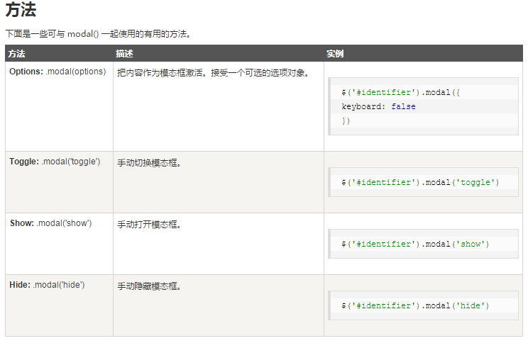
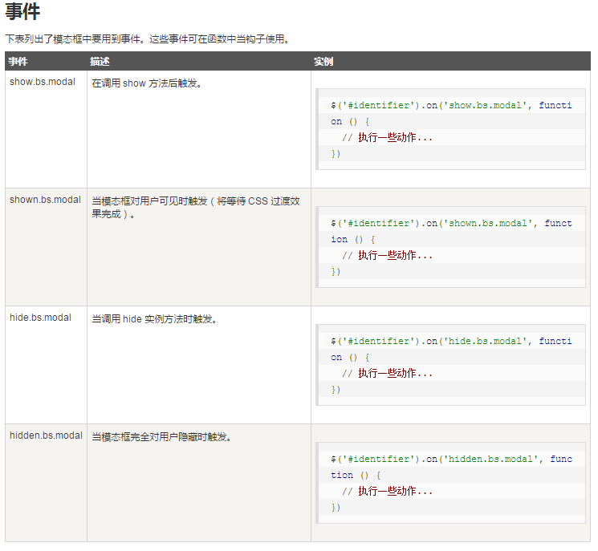

插件：模态框（Modal）插件
模态框（Modal）是覆盖在父窗体上的子窗体。通常，目的是显示来自一个单独的源的内容，可以在不离开父窗体的情况下有一些互动。子窗体可提供信息、交互等。
用法
您可以切换模态框（Modal）插件的隐藏内容：
- 通过 data 属性：在控制器元素（比如按钮或者链接）上设置属性
data-toggle="modal"，同时设置data-target="#myModal"或href="#myModal"来指定要切换的特定的模态框（带有id="myModal"）。 -
通过 JavaScript：使用这种技术，您可以通过简单的一行 JavaScript 来调用带有 id="myModal" 的模态框：
$('#myModal').modal(options); - 测试后备注：Modal模态框初始化只能进行一次，之后无论怎么改变配置都仅使用首次初始化的设置。



$('#myModal').on('show.bs.modal', function(){
alert('EVENT show.bs.modal , 在调用 show 方法后触发！');
});
$('#myModal').on('shown.bs.modal', function(){
alert('EVENT shown.bs.modal , 当模态框对用户可见时触发（将等待css过渡效果完成）。');
});
$('#myModal').on('hide.bs.modal', function(){
alert('EVENT hide.bs.modal , 在调用 hide 方法后触发！');
});
$('#myModal').on('hidden.bs.modal', function(){
alert('EVENT hidden.bs.modal , 当模态框完全对用户隐藏时触发。');
});
回调函数
上面介绍的事件，虽然可以针对模态框打开到关闭的四种状态做回调处理，但是却不能对用户是否做了“点击确定按钮”的事件作出相应。因此这里我们需要手动添加。
function bindConfirm()
{
$('.j_modalConfirm').on('click', function(){
alert('点击确定按钮！');
$('#myModal').modal('hide');
});
}